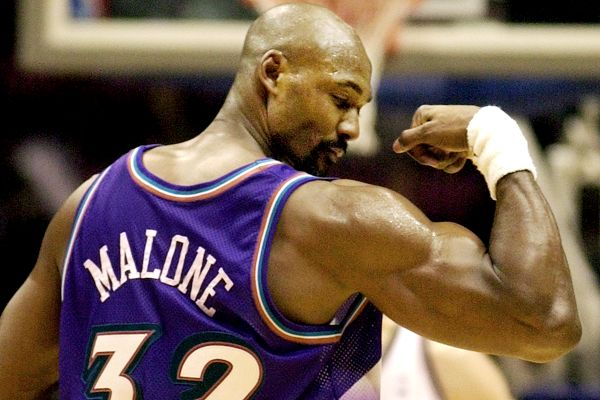

The small forward (SF), also known as the three, is one of the five positions in a regulation basketball game. Small forwards are typically shorter, quicker, and leaner than power forwards and centers, but typically taller and larger than either of the guard positions.
